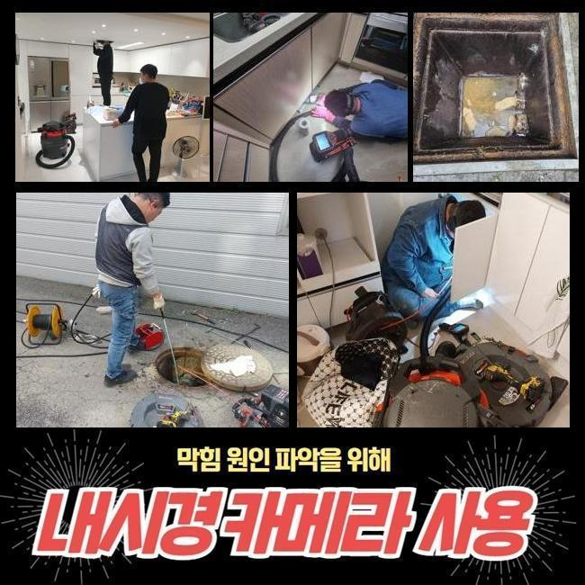
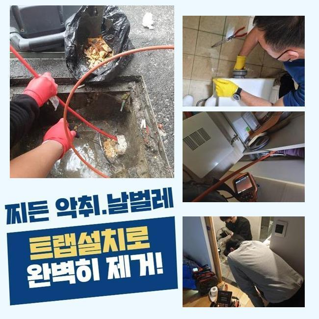
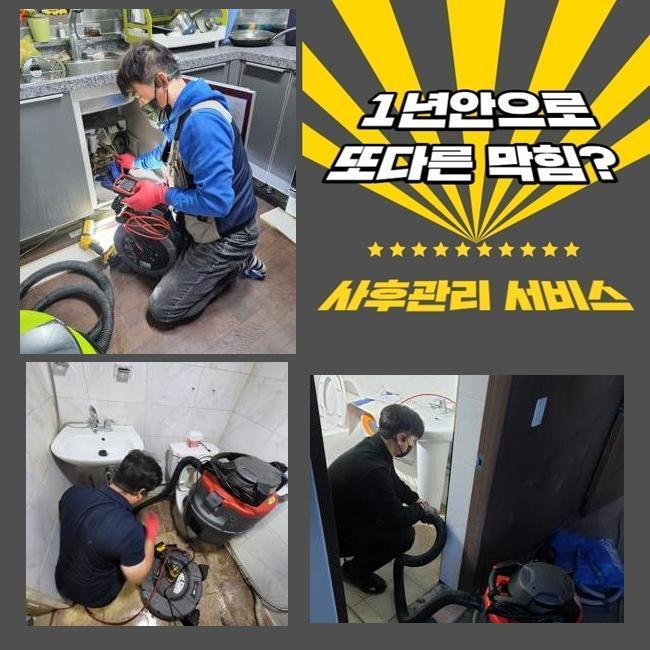
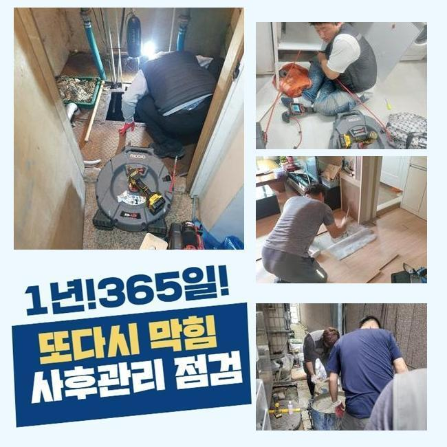
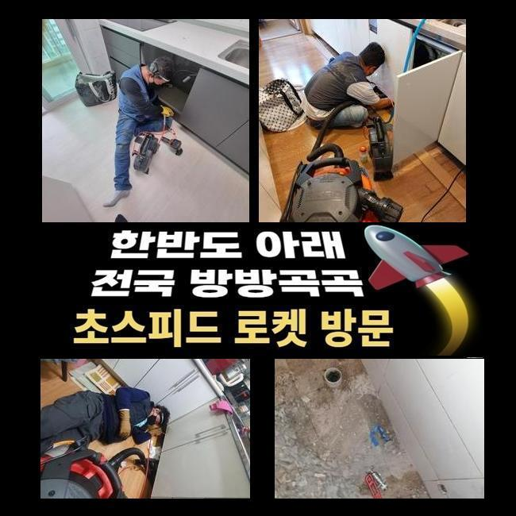
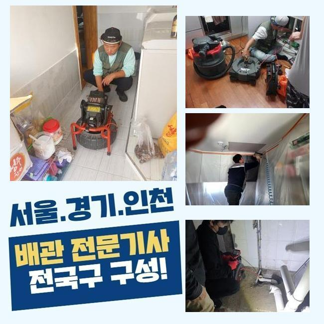

🏠 수원 평동싱크대배수구막힘 서둔동 배관내시경카메라 배관공사
수원 싱크대막힘 전문 시공 후기

📋 작업 개요
- 위치: 수원
- 서비스 유형: 싱크대막힘, 하수구막힘, 배관막힘, 맨홀막힘, 역류해결, 뚫는업체, 배관청소, 설비공사
- 작업 일시: 2025. 3. 4. 16:49
- 업체명: 하수구수사대 (010-5615-2118)
🔍 문제 상황
수원 평동싱크대배수구막힘 서둔동 배관내시경카메라 배관공사
주방에서 조리공간이 막히게되면 식자재를 취급하는것에 다양한 애로사항들을 감당해야됩니다
식당의 경우 이같은 문제들이 생기면 운영측면에도 좋지못한 영향들을 주죠
그러므로 전문적이고 신속한 대응이 필요하죠
요식업소에서 배수구에서 배수정체가 나타나게 되었어요
근방의 식당에도 통수오류의 사태가 보여졌어요
덧붙여 문제들이 나타난다면 메인관로에 까닭이 생겨났을 여지를 생각해야 합니다
그렇기에 동일 배수관을 이용하는 맨홀쪽의 검수도 동반되야하는 현장이였는데요
도착한 후 먼저 주방 조리공간이 막혀버린것을 목격했어요

🔎 원인 분석
💡 전문가 진단: 정밀 진단 장비를 사용하여 슬러지의 고착 여부를 판명하고 타격/세척 작업을 실시했습니다.
결과적으로는 물빠짐이 불가했고 적절한 조치들이 요구되었습니다
하수관의 결함현상은 다양한 원인들로 발생되는데 그 가운데 대표적인 까닭은 노후되었다거나 잔해들이 축적되어서죠
이같은 문제의 경우 위생 관련한 사항에도 직관적인 영향력들을 미치기에 그에 맞는 방식을 꾀했어요
내시경의 케이블을 하수관으로 넣어주면서 그 양상을 관찰하니 전체적으로 잔해들이 축적된 걸 알 수 있었는데요
내시경장치는 협소한 배수관을 살피는 장비들로 렌즈가 있는 케이블을 관로안으로 삽입시켜 그때그때 육안으로 관찰하게해주는 장비이죠
진단했더니 오염원들이 배출이 안되고 정체하고 있던 상태였는데요
하수관이 오래된 경우라던가 구조에서 비롯된 증상이 아닌 물이 흘러들어갈때 빠져나가던 잔해물들이 누적되어 배수를 힘들게 만든게 원인인것으로 판단되었습니다
주방의 관로와 외부라인이 이어져있는 구조인지라 싱크대부분에서 나타난 이물들이 바깥까지 악영향들을 미친 상태였습니다
까닭들을 체크해보고 즉각 하수도를 뚫어보고자 작업해주었어요
이 시기에 이용한건 플렉스 샤프트라는 기기로서 이 기기는 하수도에서 회전하게되며 흡착물을 청소시키는 결정적인 기기에요

🔧 작업 과정
샤프트의 사슬들을 활용한다면 씽크대부분이 막히게 되었을 때 오염물질들을 제거하고 또한 내구성을 지켜내면서 수월하게 작업을 진행시킬 수 있죠
샤프트기계를 투입하여 이물질이 쌓인 곳에 도달하여 체인들로 오염물질들을 없애주었어요
잔해물들이 샤프트기기에 걸려서 빠져나왔어요
뒤섞인 찌꺼기를 확인하니 생각한대로 싱크볼에서 침투된 음식쓰레기와 기름슬러지들이 대다수였습니다
여러 사례를 보건대 식재료들이 많았었는데 손질하는 단계에서 뿌리쪽의 잔여물들로 개수대에서 흐르게되면서 막히게하는 까닭이 된것입니다
이러한 잔해들은 안전하게 배출되지 않는 까닭에 특정 부분에서 위치하게되어 막힘문제를 양산시킵니다
음식폐기물과 기름뭉치도 많은 양들이 청소됐는데 배수구안으로서 쓰여지는 오일등이 하수도로 빠져나가면서 구간마다 고착된것이죠
기름의경우 하수도에서 기간이 흐름에 따라 굳게되며 벽쪽에 붙게되고 다른 식재료와 섞이게되어 넓은 범위가 문제들을 양산시키게되요
오일성분은 날이갈수록 딱딱해지므로 간단한 방식으로 청소하기 힘든 사례가 대부분이에요
샤프트기기를 사용해 이물들을 탈락시키고 흡입장치를 준비시켜 잔존하는 이물들을 흡입시켜 놓친 부분없이 정리했는데요
고형상태에 있던 돌덩이같은 기름들과 탈락된 오염원도 폐기시키고 하수관을 내시경기기로 검수하며 작업결과를 보게되었어요
막히는 현상은 멈추게되었고 밖의 하수도의 역류들도 말끔하게 사그라들었습니다
저희전문진은 고객분에게 조리공간 수챗구멍 주의사항과 관련된 도움되는 사안들도 일러드렸죠
사용을 하실 때 배수구안으로 이물질들을 걸러주지않고 쏟아내지않는게 선행되어야 한다고 안내했는데요
더 나아가 용해되지 않는 식자재나 기름의경우 하수구 막힘의 막힘기조가 되는 까닭에 필히 잔해들을 개수대로 배출하기 이전에 별도 처리하시는게 좋다고 당부드렸죠
기름의경우 바닥라인의 내측에서 흡착되어버려서 사용한 기름성분은 주방타올로 걷어내고 버리는게 안정적인 처사가 될거에요


✅ 작업 완료
갑작스러운 배수정체를 예방하려면 반복하여 배수관을 세정해주고 필요하다면 클리너들을 사용해주는게 좋다고 말씀드렸어요
고객분은 저희의 설명을 들은 후 신경써서 관리부분을 소홀히 하지 않게 하리라 얘기해주셨는데요
하수구 문제들은 방치 시에 처음과다르게 심각성이 두드러지기에 미리 신속히 수습하는게 합리적이랍니다
마침내 의뢰인의 고민들을 바로 잡아 한숨 돌릴 수 있었고 갑작스러운 문제들을 예방하고자 적재적소의 관리책 이용이 수반되야함을 최종적으로 강조합니다!



⚠️ 주방 싱크대 배관 막힘 예방 수칙
- ✅ 기름기가 묻은 식기나 프라이팬은 설거지 전 키친타올로 반드시 기름때를 닦아내세요.
- ✅ 주기적으로 싱크대 개수대에 뜨거운 물을 가득 받아 한 번에 내려 배관 내부 기름을 씻어내세요.
- ✅ 배수구 거름망을 미세한 필터로 사용하시고 음식물 찌꺼기가 틈으로 새어 들지 않게 관리하세요.
- ✅ 베이킹소다와 식초를 뜨거운 물과 함께 일주일에 한 번씩 부어주면 배관 살균과 막힘 예방에 좋습니다.
💡 핵심 정리
- 확실한 장비 작업(내시경 점검 및 샤프트 스케일링)으로 원인을 뿌리 뽑습니다.
- 작업 후 1년 이내에 동일한 부위 재발 시 100% 무상 A/S 서비스를 보장합니다.
- 서울 · 경기 · 인천 전 지역에 24시간 언제든 긴급 출동할 수 있도록 항시 대기 중입니다.
❓ 자주 묻는 질문 (FAQ)
🚨 수원 싱크대막힘 문제로 고민이신가요?
정확한 원인 진단과 확실한 시공으로 재발 없는 해결을 약속드립니다.
24시간 긴급 출동 | 서울 · 경기 · 인천 전지역 | 1년 내 재발 시 무상 A/S